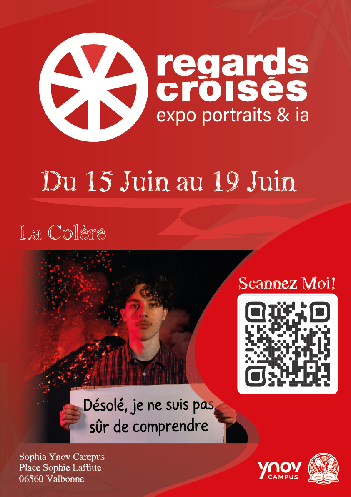
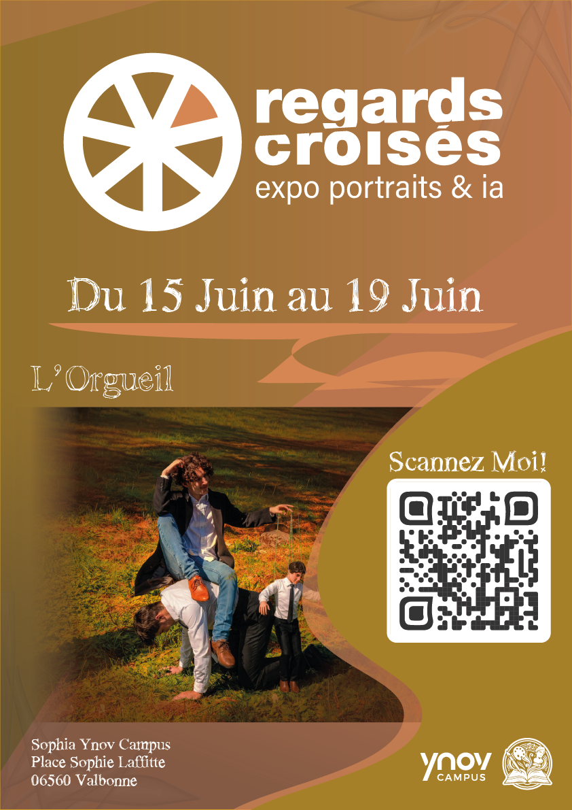
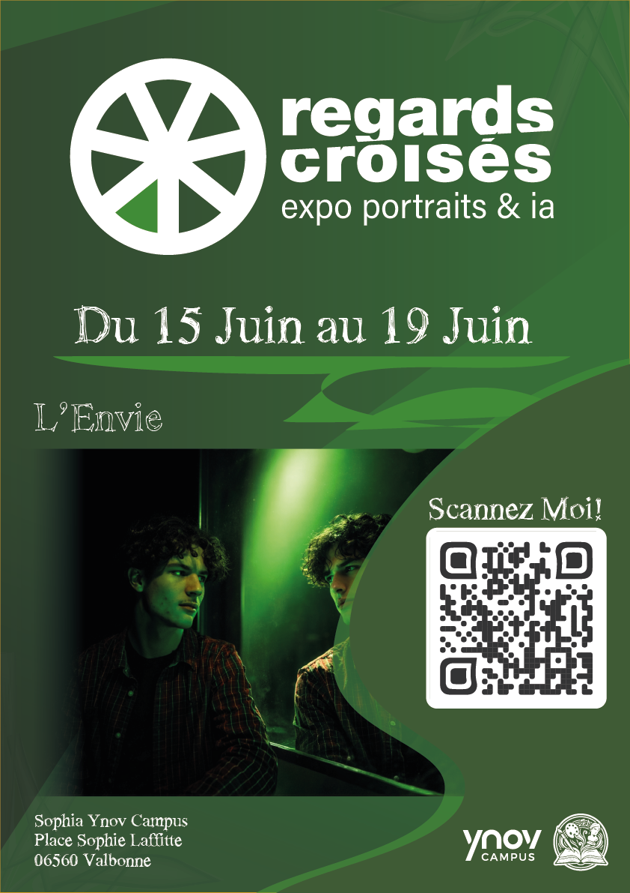

Expo artistique · Photo & IA
Projet artistique mêlant photographie et intelligence artificielle. Thème : les 7 péchés capitaux, interprétés à travers des portraits retravaillés avec l'IA.
Le concept
L'objectif était de créer une exposition artistique mêlant photographie et intelligence artificielle, en travaillant toutes les étapes du projet, de la création à la communication.
Avec mon équipe, nous avons choisi comme thème les 7 péchés capitaux, interprétés à travers des portraits photographiques retravaillés avec l'IA.
J'ai participé à la conception des visuels et à la direction artistique. Chaque péché suit le même processus : moodboard → photo de base → image finale IA → affiche magazine.
Direction artistiquePhotographie
IA générativeMoodboard
 (1).jpg)
La Colère
Rouge Vif · #d90000 — Symbolisant l'éruption intérieure, la perte de contrôle.
01 · Moodboard

02 · Photo de base

03 · Résultat final
Image finale (IA)
.jpg)
Affiche magazine

L'Orgueil
Orange Grisé · #d58553 — Symbolisant la domination et la mise en scène de soi.
01 · Moodboard

02 · Photo de base

03 · Résultat final
Image finale (IA)
.jpg)
Affiche magazine

L'Envie
Vert Avocat · #3f5a34 — Symbolisant le désir de l'autre, le regard qui ronge.
01 · Moodboard

02 · Photo de base

03 · Résultat final
Image finale (IA)
Affiche magazine
